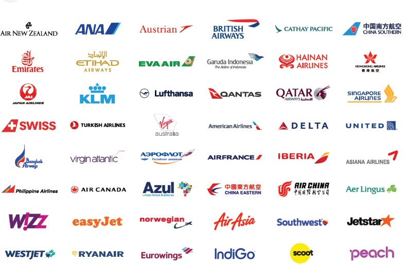
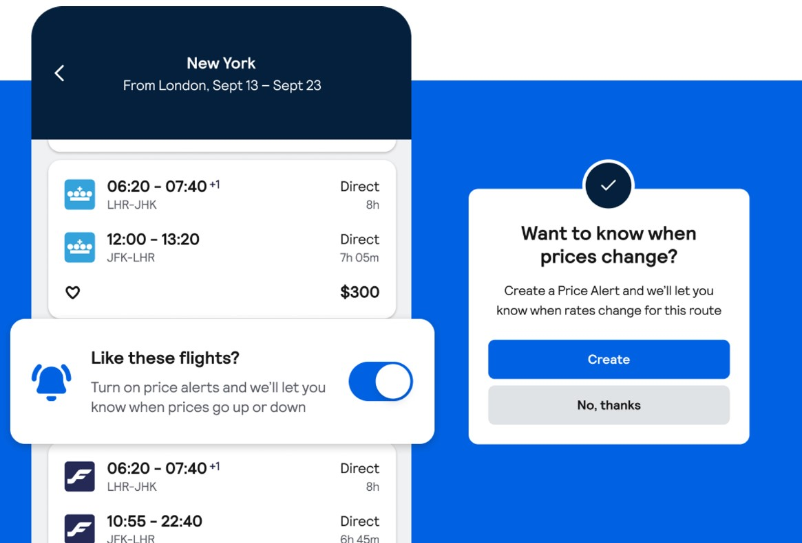
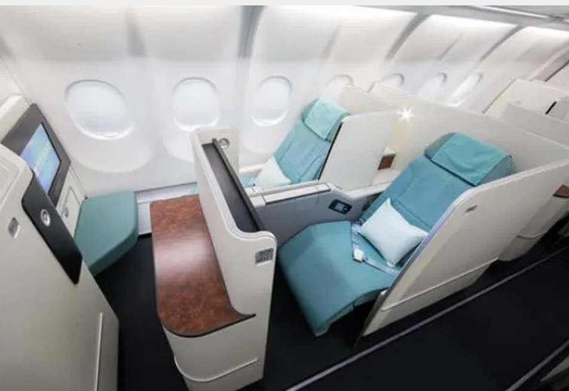

SERVICES

Users can search for flights based on various criteria such as destination,
departure city, travel dates, class, and budget.
Advanced search options often allow travelers to filter results based on
preferences like non-stop flights or specific airlines.

Users can set up flight price alerts to be
notified when the price of a particular flight drops,
enabling them to book at a lower cost.

flight booking websites allow travelers to choose their seats on the plane during the booking process.
This service might be free or come with an additional fee,
depending on the airline and the type of seat selected.